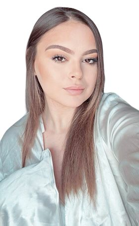

Salut moi c'est Nour Bettahar
Je suis Nour, et je vous emmène sur mon site web pour un voyage à travers mes passions : voyager et écouter de la musique. Je suis une âme vagabonde, toujours à la recherche de nouvelles aventures et de mélodies qui touchent mon cœur.
Discover le wagonVoyages
Dès mon plus jeune âge, j'ai été bercée par l'amour du voyage. Grâce à ma famille, j'ai eu la chance de découvrir de nombreux pays et cultures, nourrissant ainsi ma curiosité et mon envie d'explorer le monde. Aujourd'hui, je continue à assouvir ma passion en solo, sac au dos et esprit ouvert. Ma liste de destinations s'allonge au fil des années, ponctuée de souvenirs inoubliables. J'ai arpenté les rues animées de Londres, me suis laissée charmer par le charme des îles grecques à Mykonos, profité des plages paradisiaques de Tunisie et d'Hammamet, vibré au rythme de Barcelone et de Madrid, dansé sur les plages d'Ibiza, exploré les trésors du Maroc de Marrakech à Casablanca, Rabat et Fès, et succombé à la dolce vita italienne à Milan, Venise, Sicile et Monaco.
.jpg)
Chaque voyage est pour moi une occasion unique de me découvrir et de grandir. Je me perds dans les ruelles pittoresques, savoure la gastronomie locale, rencontre des habitants chaleureux et m'imprègne de l'atmosphère unique de chaque endroit. Je reviens de chaque voyage transformée, avec une nouvelle perspective sur le monde et sur moi-même.
Musique

La musique a toujours fait partie intégrante de ma vie. Dès mon plus jeune âge, j'ai été bercée par des mélodies de tous horizons, nourrissant mon âme et rythmant mes pas. Aujourd'hui, la musique est bien plus qu'une simple passion, c'est une nécessité. Je ne me sépare jamais de mes écouteurs, qu'ils soient le fil rouge de mes journées ou l'échappatoire indispensable à mes moments de solitude.
La musique est pour moi une source d'inspiration inépuisable. Elle me motive, me donne de l'énergie et me permet de me dépasser. Que je sois en train de travailler, de faire du sport ou de me détendre, la musique est toujours présente, me poussant à aller plus loin et à donner le meilleur de moi-même. D'ailleurs j'assiste à plein de concerts de mes musiciens et rappeurs préférés.
Gastronome dans l'âme
En plus de mes passions pour le voyage et la musique, je suis une véritable gastronome dans l'âme. J'adore tester de nouvelles choses et explorer les cuisines du monde. Pour moi, la nourriture est bien plus qu'un simple moyen de se nourrir, c'est une expérience sensorielle et culturelle unique.
Que ce soit dans un restaurant étoilé ou dans un petit stand de rue, je suis toujours à l'affût de nouvelles saveurs et d'expériences culinaires inédites. J'aime déguster des plats typiques, découvrir des ingrédients inconnus et m'imprégner des traditions culinaires locales. Chaque bouchée est une nouvelle aventure qui me transporte vers de nouveaux horizons gustatifs.